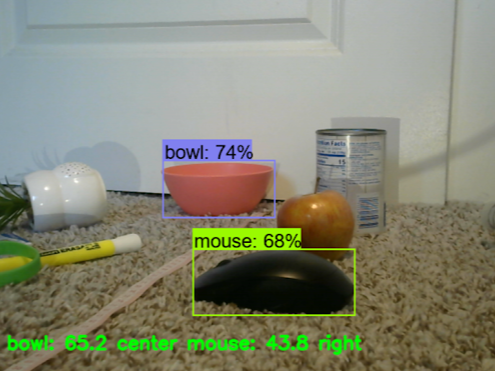

Monocular Depth Perception

Proposed and executed a geometric approach for real-time depth estimation using a monocular camera. Achieved distance measurements with ±3% precision for a novel algorithm incorporating an object detection pipeline.
- Compared and evaluated RESNET, YOLO, and MobileNet object detection models using a curated image dataset to assess processing time and efficiency.
- The system can measure the distance of objects in a given frame in real-time, providing immediate feedback on the distances of objects around them.
- Accurately determines the location of objects within the frame, providing bounding boxes around detected objects to give insight into the spatial arrangement.
- Detects multiple objects at various distances, allowing visually impaired individuals to perceive and interact with multiple objects simultaneously.